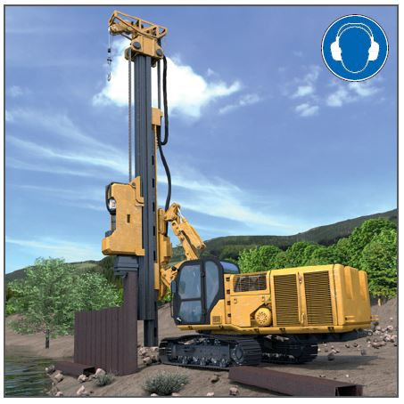
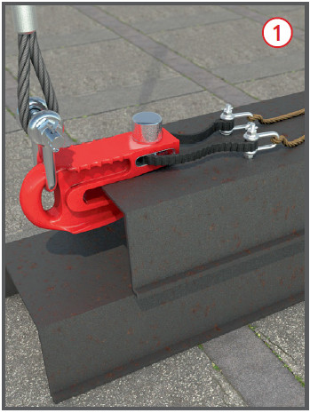
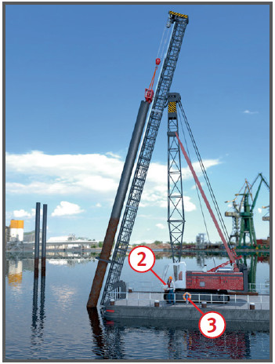

Gefährdungen
- Nicht tragfähiger Baugrund
führt zu Umstürzen der Rammgeräte.
- Kontaminationen und Kampfmittel
können Personenschäden
auslösen.
- Hebezeuge versagen durch
Abknicken des Auslegers bei
nicht bestimmungsgemäßen Einsätzen.
- Lange Rammelemente können
durch nicht bestimmungsgemäßen Einsatz von Anschlagmitteln herunterfallen.
- Unsachgemäße Lagerung von
langen Rammelementen kann
beim An- und Abschlagen zu
Verletzungen führen.
- Die Lärmentwicklung beim
Rammvorgang kann Gehörschädigungen auslösen.
Allgemeines
- Rammen werden im Spezialtiefbau
eingesetzt, um Rammelemente (z. B. Stahlprofile,
Beton-Fertigteile, Ortbeton) durch
Schlagen, Rütteln oder Pressen in
den Baugrund einzubringen oder
aus dem Baugrund zu ziehen.
- Für Rammarbeiten ist ein Aufsichtführender
zu bestimmen,
der während der Arbeiten auf der
Baustelle anwesend sein muss.
- Maschinenführer müssen:
- mindestens 18 Jahre alt,
- im Führen und Warten der
Ramme und in fachbezogenen
sicherheitstechnischen Belangen unterwiesen sein,
- ihre Befähigung nachgewiesen
haben,
- vom Unternehmer schriftlich
beauftragt werden.
- Ein in der Bauwirtschaft anerkannter
Befähigungsnachweis
ist die ZUMBau
Qualifikation.

- Rammen nur auf tragfähigem
Untergrund betreiben – zulässige
Bodenpressung beachten.
- Warnkleidung tragen.
Schutzmaßnahmen
- Gefährdungen baustellenbezogen
ermitteln und Arbeitsschutzmaßnahmen
festlegen.
- Alle Mitarbeiter müssen vor
Arbeitsaufnahme über die Ergebnisse der baustellenbezogenen
Gefährdungsbeurteilung und die
daraus abgeleiteten Maßnahmen
unterwiesen werden.
Vor Beginn der Arbeiten
- Baufeld erkunden,
- ob im Arbeitsbereich Kabel,
Leitungen, Kanäle o. Ä. vorhanden sind, von denen Gefahren
ausgehen können,
- ob der Baugrund frei von
Kontaminationen und Kampfmitteln
ist,
- ob der Baugrund ausreichend
tragfähig für das Befahren mit
schweren Baumaschinen ist.
- ob ausreichend Arbeitsräume
für das Lagern, Aufnehmen
und Ablegen von langen
Elementen des Spezialtiefbaus
vorhanden sind.
- Baufeld vorbereiten
- entsprechend den Ergebnissen
der Erkundung,
- ggf. vorhandene Leitungen
verlegen, freischalten, sichern,
- Verkehrswege und Lagerflächen festlegen und kennzeichnen,
- Arbeitsplanum herrichten.
Maschinen
- Rammen oder Hebezeuge nur
bestimmungsgemäß betreiben,
d. h. entsprechend den Angaben
in der Betriebsanleitung (BA)
des Herstellers der Ramme/Hebezeug bzw. der Anbauausrüstungen.
- Festlegungen in der BA zur
zulässigen Traglast beachten.
- Hebezeugbetrieb nur im Rahmen
der BA und nur dann, wenn
die Last kraftschlüssig gesenkt
wird (nicht im „Freifall-Modus“).
- Schrägzug grundsätzlich nicht
zulässig, außer für die in der BA beschriebenen Fälle.
- Standsicherheitskriterien der
BA beachten.
- Aufstiege am Mäkler müssen
mit Einrichtungen zum Schutz
gegen Absturz ausgerüstet sein
(z. B. Steigschutz, Rückenschutz).
- Bei Aufbau, Abbau und Umrüstung von Rammen BA und
Wartungsanleitung beachten.
Einbringen und Ziehen von Rammelementen
- Der unbefugte Aufenthalt im
Gefahrbereich ist verboten. Halten
sich Unbefugte im Gefahrbereich
auf, hat der Maschinenführer
die Arbeit zu unterbrechen.
- Ist für bestimmte Arbeitsschritte der Aufenthalt im Gefahrbereich unerlässlich oder ist die
Sicht des Maschinenführers
eingeschränkt, sind vom Unternehmer
besondere Schutzmaßnahmen
festzulegen und von den
Mitarbeitern zu beachten, z. B.:
- zusätzliche Einrichtungen zur
Verbesserung der Sicht nutzen (z. B. Kamera-Monitorsysteme ggf. Einweiser),
- Arbeitsweise aufeinander abstimmen,
- vor dem Betreten Kontakt mit dem Maschinenführer aufnehmen.
- Rammvorgang ständig beobachten,
damit bei Gefahr unverzüglich
gestoppt werden kann.
- Nur formschlüssig wirkende
Lastaufnahmemittel
 verwenden.
verwenden.
- Werden Ketten bzw. Klemmen
für das Heben von Rammelementen
verwendet, sind die
Einsatzbedingungen in einer
Betriebsanweisung festzulegen
(z. B. max. zulässige Last,
Knebel/Lochverhältnis, tägliche
Sichtprüfungen).
- Rammelemente während aller
Arbeitsvorgänge gegen Umfallen
sichern, z. B. durch zusätzliche
Halterungen, Sicherungsketten/-seile, Rammschablonen).

- Muss der Bereich unter der
Rammausrüstung aufgrund des
Rammverfahrens vorübergehend
betreten werden, ist eine mechanische
Verriegelung vorzunehmen
(Absteck- oder Halteeinrichtung).
- (Mobil-)Krane nur dann als
Trägergerät bei Zieharbeiten einsetzen,
wenn dies vom Hersteller
als bestimmungsgemäßer
Einsatz vorgesehen ist.
- Rammbären/-hauben, Rüttler
usw. gegen Herabfallen sichern.
- Beim Betreiben von Rammbären und -rüttlern ist mit erhöhter
Lärmbelastung zu rechnen,
daher
- vermeidbare Lärmquellen beseitigen (z. B. mitvibrierende Anschlagketten),
- geeigneten Gehörschutz tragen,
- regelmäßige arbeitsmedizinische Betreuung sicherstellen.
Zusätzliche Hinweise für Rammarbeiten auf schwimmenden Geräten
- Ponton nach Größe und Gewicht der Ramme/Hebezeug auswählen.
- Die Schwimmfähigkeit und
Kentersicherheit des Pontons
rechnerisch nachweisen und
durch einen Sachverständigen
prüfen lassen ("4 Augen-Prinzip").
- Beachtung der verminderten
Standsicherheit des Rammgerätes bei Krängung des Pontons.

- Reduzierung der Traglast des
Hebezeuges (Seilbagger) durch
Krängung (Tabellen der Hersteller
anfordern).
- Pontons sicher verankern.
Achtung bei Verankerungen im
Tidehubbereich.
- Deckskanten, soweit es der
Betrieb zulässt, mit Geländern,
Klappgeländern u. Ä. sichern.
- An Bord von schwimmenden
Geräten, Rettungskragen tragen
 .
.
- Rettungsmittel bereithalten
 .
.
- In Fahrgewässern Vorkehrungen
treffen gegen Wellenschlag
und Anfahren gegen Abspann- und
Verholseile, z. B. durch Warn- und
Verbotsschilder, Bojen.
Prüfungen
- Art, Umfang und Fristen erforderlicher
Prüfungen festlegen
(Gefährdungsbeurteilung) und
einhalten, z. B. arbeitstäglich
durch den Maschinenführer, vor
Inbetriebnahme, mind. 1 x jährlich
durch eine „zur Prüfung
befähigte Person“ (z. B. Sachkundiger).
- Ergebnisse der Prüfungen dokumentieren.
07/2021